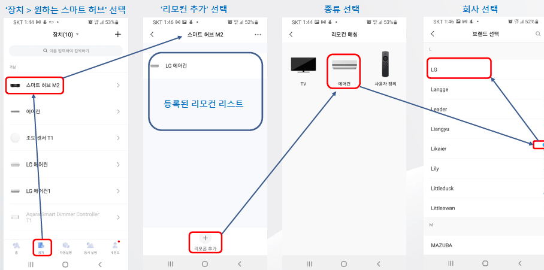

9 스마트 허브 M2
9.1 설치
질문 2: 허브 M2을 Wi-Fi또는 이더넷으로 연결하는 방법을 알려 주세요.
답변 2:
(1) 2.4GHz 공유기가 필요하며 정상적으로 작동해야 합니다.
(2) 허브는 오직 2.4GHz Wi-Fi 네트워크를 지원합니다. 듀얼 밴드 공유기를 사용하는 경우 허브를 추가하기 전에 5GHz Wi-Fi 네트워크를 꺼주세요.
(3) 허브와 공유기 간의 유선 통신을 사용해야 하는 경우, RJ45 네트워크 포트가 있는 네트워크 케이블을 사용하여 허브의 LAN 포트를 라우터의 LAN 포트에 연결하고 네트워크 포트 측면의 주황색 및 녹색 지시등이 켜질 때까지 기다리십시오.
질문 3: 허브 M2를 설치할 위치를 선정하는 방법을 알려 주세요.
답변 3:
(1) 아카라 디바이스가 위치한 영역의 중앙에 설치하는 것이 좋습니다. 이렇게 하면 허브와 각 아카라디바이스 간의 안정적인 통신이 보장됩니다. 아카라디바이스와 허브 간의 거리가 너무 멀 경우 서브 장치의 오프라인 문제가 발생할 수 있습니다. 이 문제를 피하기 위해 다른 허브를 추가하고 아카라디바이스를 해당 허브에 연결하십시오.
(2) 허브는 가능한 한 공유기에서 멀리 떨어지지 않도록 해야 합니다. Wi-Fi 통신의 안정성을 보장하기 위해 최적 거리는 2에서 6미터입니다.
9.2 사용팁
질문 1: 허브와 서브간의 유효한 통신 거리는 얼마입니까? 신호가 벽을 통과 할 수 있습니까?
답변 1:
서브디바이스와 허브 간의 유효한 통신 거리는 실내 환경에 따라 다릅니다. 일상적인 가정 환경에서 사용할 때는 하위 장치와 허브 사이의 거리가 10m를 넘지 않고, 중간에 양면 벽을 넘지 않는 것이 좋습니다.
질문 2: 허브와 서브디바이스간의 통신 거리가 정상인지 어떻게 확인할 수 있습니까?
답변 2:
자세한 내용은 하위 장치 안내서의 유효 거리 확인을 참조하시기 바랍니다. 하위 디바이스의 상태 표시등이 깜빡거리고 허브는 디바이스가 허브와 효과적으로 통신 할 수 있음을 나타내는 음성으로 알려 줍니다. 통신이 제대로 작동하지 않으면 하위 장치를 허브 근처로 이동하거나 허브를 하위 장치 근처로 이동한 다음 다시 시도 하십시오.
질문 3: 스마트 허브 M2는 얼마나 많은 하위기기를 연결 할 수 있나요?
답변 3:
유선으로 작동하는 하위 기기가 32개 이상 포함된 경우 스마트 허브 M2는 최대 128개의 하위 기기를 연결할 수 있습니다. 무선 기기만 연결할 경우 최대 32개의 하위 기기만이 연결됩니다.
질문 4: 인터넷이 끊기면 허브가 제대로 작동합니까?
답변 4:
인터넷이 끊긴 후에는 원격 액세스 기능은 사용하실 수 없습니다. 그러나 기존에 설정된 자동화는 정상적으로 동작합니다.
질문 5: 허브 M2는 무엇을 할 수 있는지요?
답변 5:
허브 M2는 스마트 홈 제어 센터이자 애플홈킷과 호환되는 스마트 브릿지입니다. Wi-Fi 또는 이더넷 네트워크 접속을 지원하며 지그비 하위 장치와의 상호 연결을 지원합니다. IR 원격 제어 기능을 통해 다양한 IR 장치를 추가하고 관리할 수 있습니다. 허브 M2를 사용하면 플러그, 조명, 커튼, 에어컨, 선풍기 등을 더 편리하게 제어할 수 있습니다.
질문 6: 허브 M2의 IR 기능으로 무엇을 할 수 있나요?
답변 6:
허브 M2는 IR 제어 센터로 사용할 수 있습니다. 앱을 통해 해당 IR 장치가 페어링된 후, 앱을 통해 직접 제어하거나 TV를 켜고, 선풍기를 작동시키고, 에어컨을 제어하는 등의 자동화 설정을 통해 제어할 수 있습니다.
질문 7: 스마트 허브 M2의 버튼 기능은 무엇인가요?
답변 7:
길게 누름: 허브를 재설정하려면 버튼을 10초 동안 길게 누르십시오. 이 작업은 타이밍, 전원, 하위 장치 목록 등과 같은 장치 데이터를 삭제하지 않습니다. 빠른 클릭 10회: 공장 설정으로 복원합니다. 모든 데이터를 삭제하십시오.
질문 8: 스마트 허브 M2의 펌웨어는 어떻게 업그레이드하나요?
답변 8:
휴대전화가 허브가 위치한 Wi-Fi 네트워크에 연결되어 있는지 확인하고, Aqara Home 앱을 열어주세요. 장치 페이지에서 업데이트해야 할 허브를 선택하여 허브 세부 정보 페이지로 이동한 후, 펌웨어 업데이트를 클릭하세요.
질문 9: IR 리모컨 기능을 사용하는 법을 알려 주세요.
답변 9:
- 앱의 맨 아래 “장치” 메뉴 선택 >> 리모컨 기능을 원하는 허브 선택 >> 리모컨 추가

- 테스트로 현재 컨트롤 대상 가전에 맞는 리모컨 선택
- 모든 테스트에 대한 반응이 OK이면 제어 리모컨 생성
9.3 Troubleshoot
질문 1: Ark 기술이 무엇인지요?
답변 1:
Ark 기술은 아카라 스마트 홈 시스템의 분산형 다중 수준 지역화 재해 복구 기술입니다. 현재 Ark 기술은 2.0 버전으로 업데이트되었습니다. 이는 허브 로컬 자동화 기능, 다중 허브 대기 교체, 프록시 허브 재해 복구 등을 포함합니다. 클라우드 서버, 인터넷, 라우터, 허브가 오류가 발생할 때 이러한 문제에 대한 다중 수준의 재해 복구 보호 기능을 제공하여 로컬 자동화 및 시나리오 실행을 최대한 보장하고 아카라 스마트 홈 시스템의 신뢰성과 안정성을 향상시킵니다.
질문 2: 프록시 허브 재해 복구 기능은 무엇인지요?
답변 2:
아카라 허브 제품들(허브 M2, G2HPro, G3 등)이 오류가 발생하거나 전원이 꺼진 경우, 이들에 연결된 일부 Zigbee 장치는 “프록시 허브”로 작동할 수 있으며, “프록시 허브”는 일부 기본적인 로컬 자동화와 시나리오 실행을 담당합니다.
질문 3: 국내 출신된 제품 중 어떤 장치가 현재 프록시 허브로써 역할을 할 수 있습니까?
답변 3:
다음 제품이 프록시 허브 역할을 합니다.
LED 스트립 T1 (펌웨어 버전 0.0.0_2729 이상)
LED 스트립 드라이버 T1 (펌웨어 버전 0.0.0_0024 이상)
질문 4: 프록시 허브 재해복구 기능을 정상 동작하도록 하기위해서 필요 사항은 무엇인가요?
답변 4:
(1) 기기(허브, 프록시 허브, 다른 Zigbee 라우터를 포함)의 펌웨어를 최신 버전으로 업데이트해야 합니다.
(2) 프록시 허브 재해 복구 기술은 간단한 자동화 조건 및 동작만 지원할 수 있습니다(예: 장치의 전원 켜기/끄기 등).
질문 5: 정상적으로 사용 중 표시등이 하얀색 (또는 노란색)으로 깜빡이며 아카라 홈앱을 실행하라는 음성 메시지가 나옵니다. 앱을 실행하면 M2허브는 사라져 있습니다. 제품 초기화 후 다시 연결해도 약 30분 전 후로 같은 증상이 반복됩니다.
답변 5:
먼저 다음 두가지 방법으로 스마트 허브 M2 초기화 한 후 제품을 재등록하여 시도하십시오.
방법 1: 네트워크 초기화(리셋버튼 10초 이상 누르기)
방법 2: 공장 초기화(리셋버트 빠르게 10번 누르기)
위 두가지 방법 시도 후에도 해당 증상 지속 되는지 확인해 주십시오. 만약 정상적으로 M2 제품 등록 후에 아카라 홈앱을 열라는 음성 메시지와 네트워크 초기화 성공했다는 등의 메시지가 나온 후 제품이 사라진다면, 전원부의 물리적인 불량 또는 고장이 의심됩니다.
질문 6: 허브 M2설치에 실패했습니다. 무엇을 체크해야 하고, 어떻게 문제를 해결할 수 있는지요?
답변 6:
(1) 허브를 추가하기 전에 허브의 노란색 표시등이 천천히 깜박이는지 확인하십시오.
(2) 공유기가 듀얼 밴드 공유기인지(2.4GHz Wi-Fi와 5GHz Wi-Fi를 동시에 지원하는지) 확인하십시오. 그렇다면, 공유기설정 페이지로 이동하여 Wi-Fi 핫스팟을 2.4GHz로 설정한 후 다시 시도하십시오.
(3) 허브 버튼을 10초 동안 길게 누르고 노란색 표시등이 깜박일 때 아카라홈 앱을 열고, 오른쪽 상단의 “장치 추가”를 선택한 후 허브 목록에서 “스마트 허브 M2”를 선택하면 앱의 안내에 따라 장치를 추가할 수 있습니다. iPhone을 사용하는 경우 장치 하단의 QR 코드를 스캔하여 앱의 안내에 따라 바인딩할 수 있습니다. 바인딩이 실패한 경우 허브 네트워크를 복원하기 위해 버튼을 10초 동안 길게 누르고, 휴대전화의 Wi-Fi를 다시 시작한 후 1분을 기다렸다 다시 시도하십시오.
질문 7: 애플 홈킷에 연결할 수 없습니다. 어떻게 해야 하는지요?
답변 7:
(1) “액세서리 추가 실패”. 여러 번의 추가 실패로 인해 iOS 캐시의 오류 정보를 제거할 수 없습니다. iOS 기기를 다시 시작하고 스마트허브 M2를 재설정하세요.
(2) “액세서리 이미 추가됨”. iOS 기기를 다시 시작하고 스마트허브 M2를 재설정한 후, 직접 HomeKit 설정 코드를 입력하여 다시 추가할 수 있습니다.
(3) “액세서리를 찾을 수 없음”. 스마트 허브 M2를 재설정 한 후 3분을 기다리십시오. 직접 HomeKit 설정 코드를 입력하여 다시 추가할 수 있습니다.
질문 8: 스마트 허브 M2가 성공적으로 추가되지 않고 “이 장치가 추가 되었습니다” 라는 메시지가 나오면 어떻게 해야 하는지요?
답변 8:
애플홈 또는 아카라홈 앱에서 이전에 추가한 허브를 삭제하고, 휴대전화의 Wi-Fi를 다시 시작한 후, 허브를 재설정하기 위해 10초 동안 버튼을 길게 눌러 노란색 표시등이 깜박일 때까지 기다린 후 허브를 다시 추가하십시오.
질문 9: 전원이 끊기거나 와이파이가 다운된 후 다시 전원이 들어오거나 와이파이가 연결된다면, 수동으로 허브를 다시 연결해야 하나요? 이 경우 기존 정보는 상실되나요?
답변 9:
허브는 자동으로 연결되며 기존 정보도 상실 되지 않습니다.
질문 10: 외부 네트워크가 다운되었을 때, 허브는 정상 동작하나요?
답변 10:
인터넷 네트워크가 끊어진 후 원격 액세스 기능을 사용할 수 없더라도 허브 하의 자동화는 여전히 정상적으로 작동합니다.
질문 11: 아카라홈 앱에서 허브가 오프라인 또는 응답없음으로 표시됩니다. 어떻게 해야 하는 지요?
답변 11:
(1) 허브의 전원 공급이 정상인지 확인하세요. 허브의 버튼을 눌러 허브의 표시등이 켜져 있는지 확인하세요. 표시등이 꺼져 있다면 허브의 전원 공급이 정상인지 확인하세요. 표시등이 켜져 있다면 2단계로 이동하세요.
(2) 휴대전화를 현재 허브가 연결된 Wi-Fi에 연결하고, 휴대전화가 인터넷에 정상적으로 연결되는지 관찰하세요. 비정상인 경우, Wi-Fi가 인터넷에 연결되지 않음을 나타냅니다. Wi-Fi가 정상적으로 사용 가능한지 확인한 후 다시 시도하세요. 정상인 경우, 3단계로 이동하세요.
(3) 허브를 뽑았다가 다시 꽂아주세요. 푸른색 표시등이 깜박거리면 푸른 빛이 계속 켜질 때까지 기다리고, Aqara 홈 앱에서 허브가 오프라인인지 확인하세요. 푸른 빛이 계속 깜박이면 앱에서 허브를 다시 바인딩하세요. 노란색 표시등이 깜박이면 앱에서 허브를 다시 바인딩하세요.
(4) 허브가 계속 오프라인 상태로 되어있는 경우, 공유기에서 1-2미터 떨어진 곳에 허브를 배치하고 중간에 장애물(특히 금속 장애물)이 없도록 확인하세요.
(5) 성능 문제로 일부 공유기는 연결된 Wi-Fi 장치가 너무 많을 때 허브가 계속 오프라인 상태로 될 수 있습니다. 이 경우, 공유기에 연결된 Wi-Fi 장치의 수를 줄이거나 더 강력한 라우터로 교체해보세요.
(6) 위의 단계 중 어느 것도 허브의 오프라인 문제를 해결하지 못하는 경우 고객 서비스에 문의하세요.
질문 12: 아카라홈앱에서 스마트허브 M2에 연결되어 있는 아카라디바이스가 오프라인 또는 응답없음 상태로 표시할 때 어떻게 해야 하나요?
답변 12:
(1) 아카라디바이스가 연결된 허브가 오프라인 상태인지 확인하세요. 허브도 오프라인 상태를 보이면, 이는 아카라 디바이스가 허브가 오프라인 상태 때문에 오프라인 상태인 것을 의미합니다. 허브를 다시 시작하고 다시 시도해보세요.
(2) 허브가 온라인 상태이지만 아카라 디바이스가 오프라인인 경우, 아카라디바이스와 허브 간의 통신이 정상인지 확인하세요. 자세한 지침은 서브 장치 설명서의 “유효 거리 확인”을 참조하세요. “연결이 정상입니다”라는 음성 안내는 장치와 허브가 효과적으로 통신할 수 있다는 것을 의미합니다. 통신이 비정상인 경우, 아카라디바이스를 허브에 가깝게 이동하거나 허브를 아카라디바이스에 가깝게 이동시켜 다시 시도하세요. 앱을 다시 시작한 후 아카라디바이스가 온라인 상태인지 확인하세요.
(3) 아카라디바이스의 전원 공급이 정상인지 확인하고, 아카라디바이스의 버튼을 눌러 아카라디바이스의 지시등이 켜져 있는지 확인하세요.